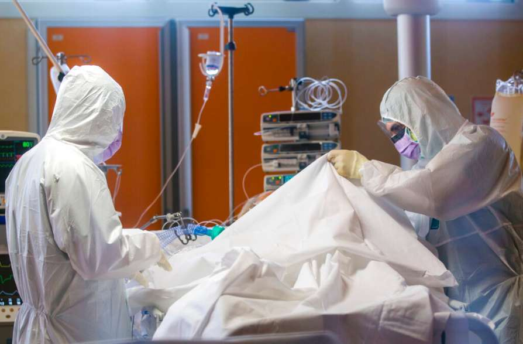

At least 80 per cent of the Covid-19 patients are being treated in government hospitals across the country. Though, leading private hospitals do have treatment facilities, people who can afford or in special cases as directed by the health department or government turn to them.
What is the cost involved in treating a Covid-19 patient? Though it varies from patient to patient, depending upon the load of virus, related ailments, age and other factors, let us see in a normal case how much it costs to the exchequer?
On an average, treatment of a normal Covid-19 carrier, without ventilators or other life-saving equipment, costs between Rs 20,000 and 25,000 daily, a senior doctor at the Thiruvananthapuram medical college hospital says.

Take the case of a swab or fluid test. The swab test of a suspected patient costs Rs 4,500 (the Supreme Court fixed this fee for private labs after hearing experts and others). The price of the test kit alone is Rs 3,000. If a person is tested or shows symptoms of Covid-19, he‘s supposed to travel only in an ambulance. Usually a hospital ambulance or a private one ferries him or her to the hospital at government expense.
Once moved to the isolation ward, there are certain specifications for such patients: each room should have a separate toilet and usually no other beds are allowed; if the patient is aged or suffering from multiple complications, ventilator is necessary.
In Kottayam, a couple, 94-year-old man and his 88-year-old wife, was on ventilator for more than a week. Some of the private hospitals charge between Rs 25,000 to Rs 50,000 per day for a ventilator.